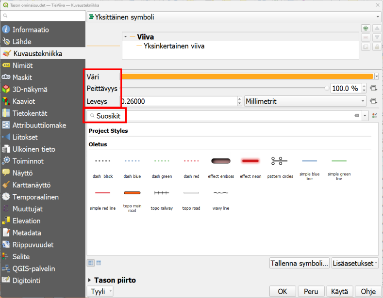
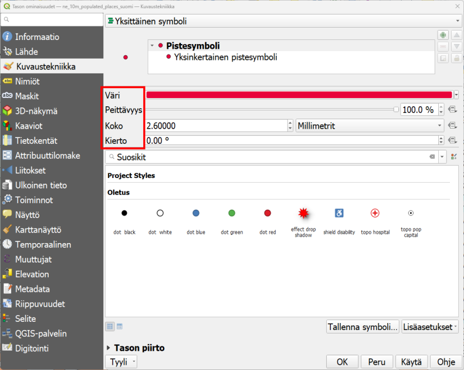
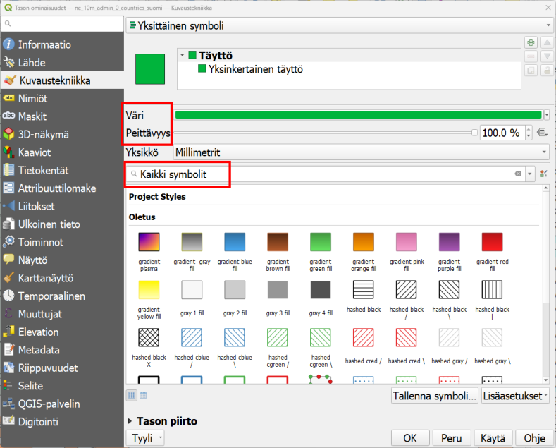
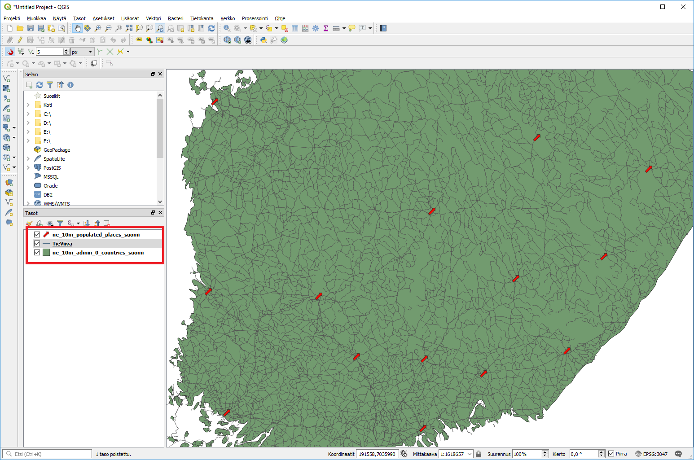
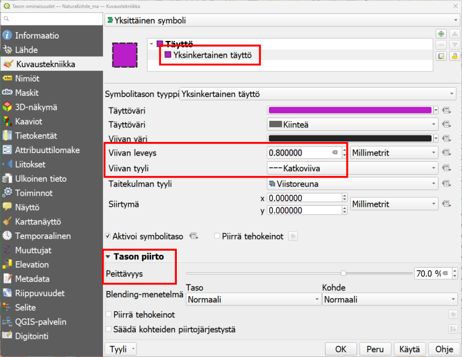

Harjoitus 3: Paikkatietoaineiston visualisointi
Harjoituksen sisältö
Harjoituksessa tehdään visualisoinnit sekä vektori- että rasteriaineistosta.
Harjoituksen tavoite
Koulutettava oppii eri aineistotyyppien visualisointitapoja.
Valmistautuminen
Käynnistä QGIS-ohjelmisto. Avaa uusi QGIS-projekti ja tallenna se nimellä (Projekti → Tallenna nimellä…) “QGIS_harjoitus_3”.
Vektoriaineistojen visualisointi
Aloita tutkimalla edellisessä harjoituksessa avattua tiestötasoa. Jos teit uuden QGIS-projektitiedoston, lisää taso painamalla Lisää vektoritaso -painiketta ja selaamalla tiedostoon …/kurssihakemisto/Harjoitus 3/TieViiva.shp. Paina hiiren oikealla painikkeella tason nimeä (TieViiva) tasoluettelossa. Valitse valikosta Ominaisuudet:

Tason ominaisuudet -ikkuna aukeaa. Huomaa vasemmalla oleva sivupalkki, josta löytyy eri ominaisuudet jaoteltuna aihekohtaisesti. Samaisessa sivupalkissa on Kuvaustekniikka-alamenu, jonka valittuasi pääset muokkaamaan tason tyyliominaisuuksia:

Vaihda Väri- ja Leveys-arvot, ja paina Käytä. Sillä tavalla saat näkyviin tekemäsi muutokset sulkematta Tason ominaisuudet -ikkunaa. Avaa vielä jokin symbolikirjasto, esimerkiksi Suosikit, ja muuta viivan tyyliksi jokin sinua miellyttävä tyyli. Paina sitten OK, ikkuna sulkeutuu ja tiestö-taso näkyy nyt määrittämäsi visualisointityylin tavalla. Muut paikkatietoaineistojen visualisoinnin työkalut saa käyttöön samalla tavalla, avaamalla hiiren oikealla Ominaisuudet ja sivupalkista Kuvaustekniikka. Eri vektoriaineistotyypeillä (piste, viiva, monikulmio) on erilaiset kuvaustekniikan työkalut, vaikkakin ne muistuttavat paljon toisiaan. Esimerkiksi pistetasolle ei voida tehdä samoja tyylittelyjä kuin viiva- tai monikulmiotasolle. Rasteriaineistojen työkalut taas eroavat melko paljon vektoriaineistojen työkaluista. Katsomme näitä myöhemmin tässä harjoituksessa.
Lisätään nyt toinen vektorimuotoinen aineisto QGIS-projektiimme. Käytä samaa työkalua kuin edellisessä harjoituksessa: avaa siis uusi taso painamalla Lisää vektoritaso -näppäintä. Etsi …/kurssihakemisto/Harjoitus 3/ne_10m_populated_places/ hakemistosta aineisto nimellä ne_10m_populated_places_suomi.shp. Tämä aineisto sisältää NaturalEarth-kaupunkiaineiston Suomesta. Avaa pistetason kuvaustekniikkaikkuna samalla tavalla kuin äsken viivatason yhteydessä. Huomaa erot viiva- ja pistetason kuvaustekniikan määrittelyissä:

Vaihda pisteen Väri ja Koko ja paina taas Käytä. Pikanäppäimellä F7 saat avatuksi Tason tyylit -ikkunan, joka on jatkuvasti avoinna karttaikkunan oikeassa laidassa. Tällöin voit helposti vaihtaa kaikkien tasojen kuvaustekniikkaa ja näet heti, miltä uusi tyyli näyttää. Vaihda symbolia ja kokeile myös, miten Kierto vaikuttaa symbolin näkymiseen.
Toistetaan samat asiat vielä monikulmiotason kanssa. Avaa nyt Suomen Natura-alueet, Harjoitus 3-hakemistosta NaturaKohde_ma.shp

ja lisää aineisto projektiin. Avaa sen kuvaustekniikkaikkuna ja huomaa erot verrattuna piste- ja viiva-aineistojen ominaisuuksiin. Muokkaa tason väriä Väri-kohdasta ja valitse tasolle jokin symboli haluamastasi kirjastosta. Voit myös kokeilla eri Peittävyys-arvoja. Paina Käytä ja kun olet testannut tarpeeksi, paina OK.
Saattaa olla, että aineistotasot peittävät toisensa vaikka siten, että monikulmio aineisto peittää muut sen alle jäävät aineistot. Kokeile muuttaa tasojen keskinäistä järjestystä ja siten tasojen näkymistä raahaamalla/vetämällä tasot uuteen järjestykseen Tasoluettelossa. Useimmiten monikulmiotasot on hyvä jättää alimmiksi tasoiksi. Jos kartalla halutaan visualisoida jotakin rasterikuvaa, kannattaa se/ne yleensä pitää myös alimpina tasoina. Uudelleen järjestettynä karttasi näyttää tältä:

Voit myös piilottaa tai näyttää tasoja painamalla tason nimen vasemmalla puolella olevaa ruutua.
Monikulmioaineiston edistynyt visualisointi
Ensimmäiseksi muutamme vektoriaineiston väriä. Avaa tason Ominaisuudet → Kuvaustekniikka ja klikkaa Väri-kohdassa olevaa väripalkkia. Valitse haluamasi väri vektoriaineistolle. Huomaa, että voit määritellä värit arvo HSV- (Hue, Saturation, Value) tai RGB-arvoilla (Red, Green, Blue). Peittävyys-arvolla säädät värin läpinäkyvyyttä. Kokeile myös Värikarttaa, Väripyörää ja Liukuväri (välilehdet). Valittuasi sopivan värin, paina OK. Paina sen jälkeen Ominaisuudet-ikkunasta Käytä. Näin Ominaisuudet-ikkuna pysyy auki ja voit katsoa tyylien muutoksia karttanäkymässä. Kun olet valinnut haluamasi värin, paina OK.

Avaa uudelleen tason Ominaisuudet-ikkuna. Kuvaustekniikka-asetuksista, valitse ensin Simple fill oheisen kuvan mukaisesti:

Sen jälkeen valitse reunaviiva katkoviivaksi kohdasta Piirron tyyli. Viivan paksuudeksi voit määritellä 0,8 millimetriä. Lopuksi voit vielä määritellä Tason piirto -kohdasta (valikko aukeaa pientä nuolta klikkaamalla) Peittävyys-kohtaan arvoksi 70%.
Psst! Muista tallentaa QGIS-projekti harjoituksen lopuksi.